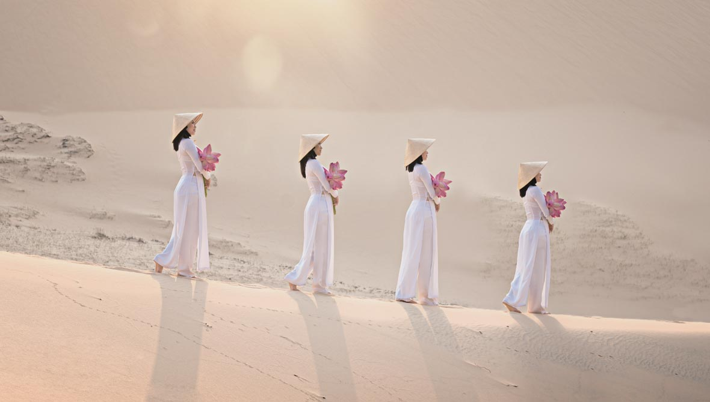

베트남은 북쪽으로 중국과의 국경에서 남쪽끝의 카마우곶(串)까지 S자 형태를 이루며 남북으로 좁고 길게 뻗어 있다.북부는 송코이강(철분이 많은 이토로 붉은 색을 띠고 있어 홍강(紅河, red river)이라고도 불리움)을 중심으로 송코이강 삼각주(송코이강 하류에 통킹만이 있어 통킹만 삼각주라고도 함)가 발달해있고, 남부에는 메콩강 삼각주가 발달하여 넓은 평야지대를 이룬다. 베트남 중부는 산맥이 바다 가까이까지 뻗어있어 평지가 적다.
국토의 3/4이 산지이며, 북서부의 중국, 라오스와의 국경 부근이 가장 고도가 높고 이곳으로부터 히말라야 조산대(造山帶)의 남동부에 해당하는 라오스 국경을 따라 남쪽으로 뻗어 있다. 북쪽은 호앙리엔선 산맥이 중국과의 경계를 삼고 있는데 석회암 산지의 연속된다. 이 산지의 끝이자 통킹만의 끝자락에 위치한 하롱만 역시 석회암 지역으로 바다의 계림이라고 불리울 만큼 자연경관이 수려하다. 베트남 국토의 서쪽 경계선을 따라 남북으로 가로지는 산맥이 안남산맥(쯔엉선 산맥이라고도 함)으로, 동쪽으로 급경사를 이루지만 라오스, 캄보디아가 있는 서쪽으로는 완경사를 이룬다
